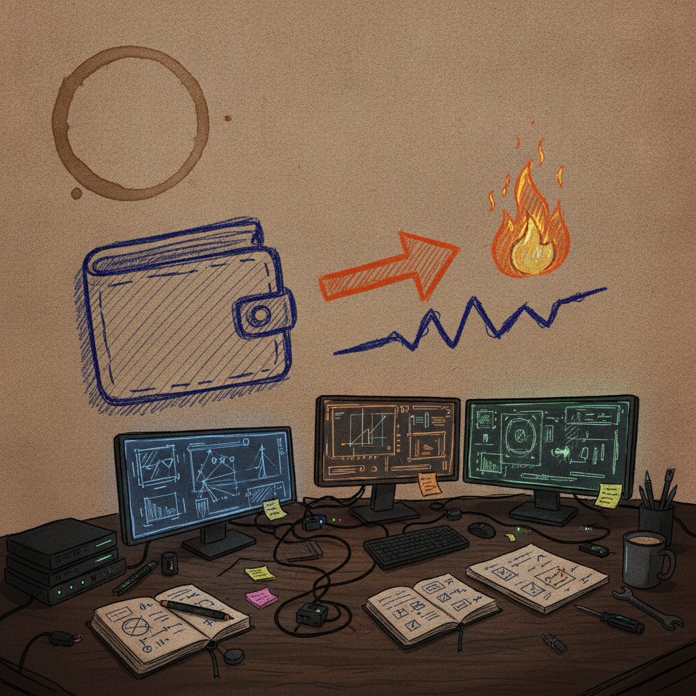

A Closer Look at ICE Labs' Latest Token Burn
I stopped on this one because it is refreshingly simple: no threads, no hype language, just two transaction IDs and two numbers. That is rare enough in crypto that it is worth pausing on.
What was bookmarked
@icelabs0 posted a "burn complete" update covering two tokens. The first was BEPE, with an amount of 97,415.4 burned. The second was ICE, with an amount of 982,606.147 burned. Each burn came with its own transaction ID, so anyone can look the transactions up directly rather than take the post's word for it. There was no accompanying link to a project site, docs, or explanation of what ICE Labs is building, what chain the tokens live on, or why these specific amounts were chosen.

Why it matters
Token burns are common in crypto, but the way they get communicated varies a lot. Some projects just say "we burned tokens" and leave it there. This post included actual TX IDs for both burns, which means the claim is checkable instead of just asserted. That is a small thing, but it lines up with something I care about across crypto infrastructure generally: if you say something happened on chain, show the receipt.
The practical breakdown
What it does: Documents two burn transactions with amounts and TX IDs attached, so the burn is auditable rather than just announced.
Who it helps: Anyone holding BEPE or ICE who wants proof that supply is actually being reduced, not just talked about.
Why builders should care: This is a low-effort, high-trust pattern. Post the TX ID alongside the claim. It costs nothing extra and it means your community does not have to take your word for it.
What problem it solves: A lot of skepticism around token projects comes from unverifiable claims. Pairing an announcement with a transaction ID closes that gap, at least partially.
What still needs work: The post does not say what chain this is on, what ICE Labs is building, how often these burns happen, or what determines the burn amount each time. Without that context, it is hard to know if this is part of a real ongoing mechanism or a one-off event.
What I would test first: Pull both TX IDs up on the relevant block explorer and confirm they actually land on a known burn address, not just an internal wallet.
Where this could go next: If ICE Labs keeps doing this on a schedule, a simple public dashboard tracking burn history over time would turn this from a series of one-off posts into an actual transparency system.
Rick's take
I like seeing TX IDs attached to a burn claim instead of just a number and a promise. That is the part of this post that actually caught my eye, not the size of the burn. I do not know much about ICE Labs beyond this post, so I can not speak to the bigger picture here, the roadmap, or what these tokens are for. But the habit of showing your work on chain is one I want to see more of, wherever it shows up.
What to watch next
Worth keeping an eye on whether @icelabs0 keeps posting these with TX IDs attached consistently, and whether any documentation or dashboard eventually ties the burns together into a clearer picture. One post like this is a data point. A pattern of them is a track record.
Source and links
Source: X post by @icelabs0, https://x.com/i/web/status/2076427511898988902, retrieved on 2026-07-12. External references: none provided in the post.